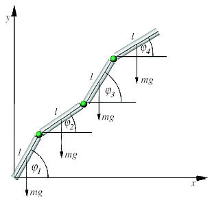
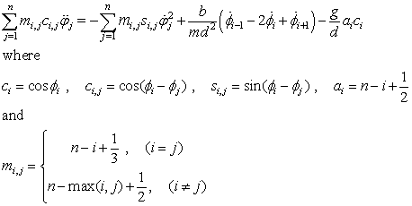

The W. Tomaszewski, P. Pieranski1, and J.-C. Geminardd discrete model of a falling chain.
The Falling U-shaped Chain model simulates the dynamics of a discrete falling chain with total length L and n links. Each link is acted on by the force of gravity mg and by contact forces from its neighboring links. A freely falling object is released near the last link for comparison. The surprise is that the acceleration of the last link can be larger than g.
Links in the model are assumed to be uniform rigid rods with mass m and length L/n connected by ideal joints. The first link is attached to a fixed point and the last link is releases a horizontal distance D from the fixed point. A small damping coefficient b is included to allow the chain to equilibrate to its hanging position below the fixed point. Tomaszewski et al. derive the equations of motion for this n-body system by expressing the Lagrangian in terms of the tilt coordinates φi for each link with respect to the the horizontal. Applying the Euler-Lagrange equation gives:

These n differential equations are implemented in the preliminary code page in Evolution workpanel. The equations couple the translational and rotational motion of the links and are difficult to solve because the variation of individual links is rapid compared to the chain envelope. Because the differential equations are stiff, the Falling U-Shaped Chain model uses the Radau 5(4) ODE solver developed Harrier and Warner to solve the time evolution.
Anoop Grewal, Phillip Johnson, and Andy Ruina, "A chain that accelerates rather than slows due to collisions: how compression can cause tension," American Journal of Physics, Am. J. of Phys. 79(7), 723-729 (2011). See also <http://ruina.tam.cornell.edu/research/topics/fallingchains/>.
W. Tomaszewski, P. Pieranski1, and J.-C. Geminard, "The motion of a freely falling chain tip," Am. J. Phys. 74 (9), 776-783 (2006).
M. Schagerl, W. Steiner, A. Steindl and H. Troger, "On the paradox of the free falling folded chain," Acta Mechanica, 125, 155-168 (1997).
Pawel Fritzkowski and Henryk Kaminski, "Dynamics of a rope modeled as a discrete system with extensible members," Computational Mechanics, 46, 901-909 (2010).
See also the Falling Slinky in the ComPADRE OSP Collection for a falling coupled mass system with dynamics that is determined by elastic contraction.
The Falling U-shaped Chain model was developed by Wolfgang Christian using the Easy Java Simulations (EJS) version 4.3.3 authoring and modeling tool.
You can examine and modify the compiled EJS model if you run the model (double click on the model's jar file), right-click within a plot, and select "Open EJS Model" from the pop-up menu. You must have EJS installed on your computer. Information about EJS is available at: <http://www.um.es/fem/Ejs/> and in the ComPADRE OSP Collection <http://www.compadre.org/OSP/>.